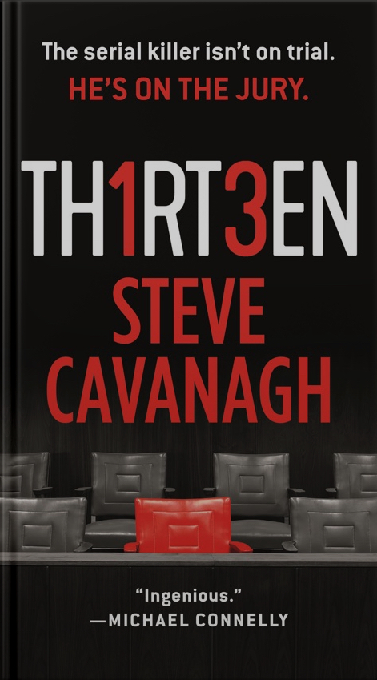
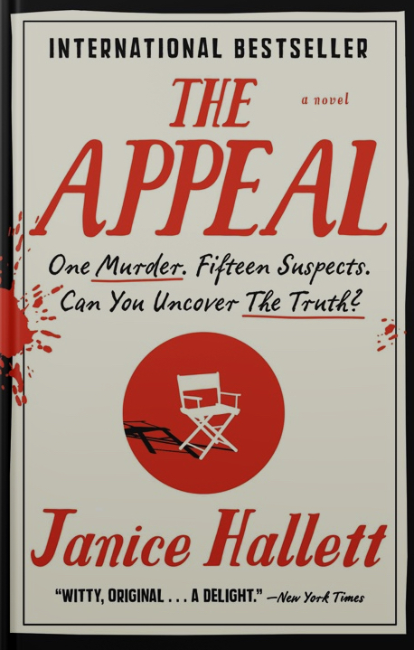
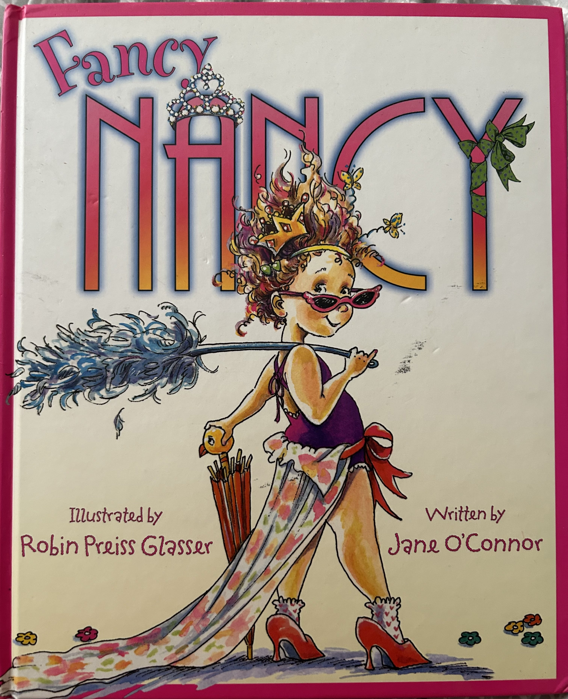
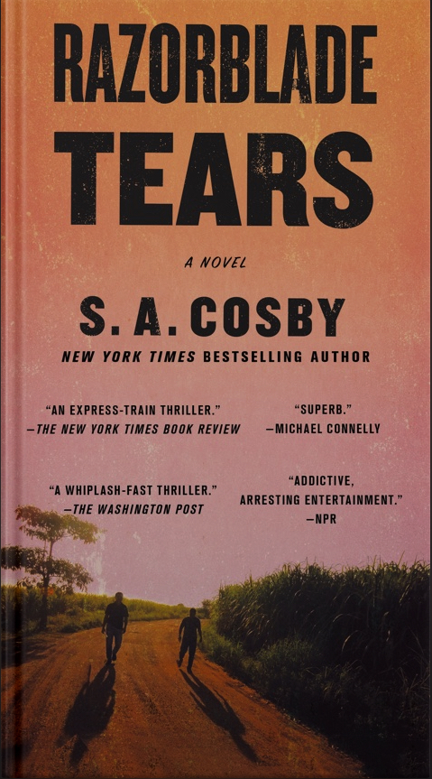

Last week I went to Ireland for the first time with my mom, my sister, and her girlfriend. We spent most of the trip in Dublin, but we did spend one day in Galway. The trip was very fun and I would love to go back to Ireland one day!
| Book Title | Cover | Author | Summary |
|---|---|---|---|
| Thirteen |  | Steve Cavanagh | A serial killer works his way onto jury to ensure that the wrong man goes down for the murder he committed. |
| The Appeal |  | Janice Hallett | A murder mystery told exclusivly through the corresponance of the characters. |
| Fancy Nancy |  | Written by Jane O'Connor Illustrated by Robin Preiss Glasser |
A childhood favorite of mine. Nancy struggles with being fancy in her not-so fancy family. |
| Razorblade Tears |  | S.A. Cosby | Two fathers join together on a quest for vengence for the murders of their sons. |